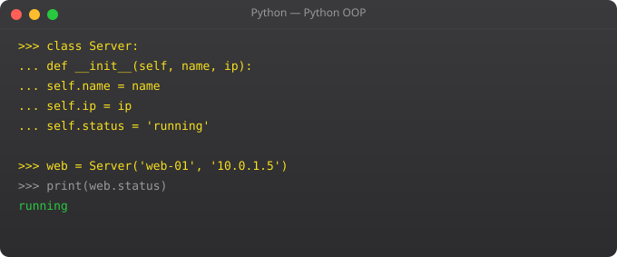

Almost every real Python application reads or writes files. Configuration files, log files, CSV exports, JSON API responses, uploaded images -- file I/O is unavoidable. Python makes it clean with context managers and has excellent built-in support for the most common file formats.
# Read entire file
with open("data.txt", "r", encoding="utf-8") as f:
content = f.read()
# Read line by line (memory efficient for large files)
with open("data.txt", "r") as f:
for line in f:
print(line.strip()) # strip() removes trailing newline
# Read all lines into a list
with open("data.txt", "r") as f:
lines = f.readlines()
# Write file (creates or overwrites)
with open("output.txt", "w") as f:
f.write("First line\n")
f.write("Second line\n")
# Append to file
with open("log.txt", "a") as f:
f.write("New entry\n")import csv
users = [
{"name": "Suraj", "age": 25, "city": "Mumbai"},
{"name": "Raj", "age": 22, "city": "Delhi"}
]
# Write CSV
with open("users.csv", "w", newline="") as f:
writer = csv.DictWriter(f, fieldnames=["name", "age", "city"])
writer.writeheader()
writer.writerows(users)
# Read CSV
with open("users.csv", "r") as f:
reader = csv.DictReader(f)
for row in reader:
print(f"{row['name']} lives in {row['city']}")import json
config = {
"database": {"host": "localhost", "port": 5432},
"debug": False,
"allowed_hosts": ["localhost", "example.com"]
}
# Write JSON
with open("config.json", "w") as f:
json.dump(config, f, indent=2)
# Read JSON
with open("config.json", "r") as f:
loaded = json.load(f)
print(loaded["database"]["host"]) # localhost
# String operations
json_str = json.dumps(config, indent=2) # Python -> JSON string
parsed = json.loads(json_str) # JSON string -> Pythonfrom pathlib import Path
project = Path("/home/suraj/myapp")
config = project / "config" / "settings.json"
print(config.exists()) # True/False
print(config.suffix) # .json
print(config.stem) # settings
print(config.parent) # /home/suraj/myapp/config
# Read/write directly
text = config.read_text(encoding="utf-8")
config.write_text("{\"debug\": true}")
# Create directories safely
(project / "logs").mkdir(parents=True, exist_ok=True)
# Find all Python files recursively
for py_file in project.rglob("*.py"):
print(py_file)The with statement (context manager) automatically closes the file when the block ends, even if an exception occurs. Prevents resource leaks and data corruption without manual close() calls.
Iterate line by line: for line in f: -- reads one line at a time without loading everything into memory. For CSV files with millions of rows, use pandas with chunksize parameter.
json.load(file) reads JSON from a file. json.dump(data, file) writes Python to JSON file. json.loads(string) parses JSON string. json.dumps(data) converts Python to JSON string.
Modern (Python 3.4+) module for file paths as objects. Use / operator to join paths. .read_text() and .write_text() for simple file operations. .rglob("*.py") to find files recursively.
Use try/except FileNotFoundError: around file operations. Or check first: if Path("file.txt").exists():. Always handle the missing-file case in production code.
In Part 9, we cover error handling -- writing code that recovers gracefully from failures.
← Back to Blogimport struct
# Read a binary file
with open("image.png", "rb") as f: # rb = read binary
header = f.read(8) # Read first 8 bytes
print(header) # b"\x89PNG\r\n\x1a\n"
# Write binary data
with open("output.bin", "wb") as f: # wb = write binary
f.write(b"\x00\x01\x02\x03")
# struct: pack/unpack binary data
data = struct.pack(">IH", 1234567890, 65535) # Big-endian uint32, uint16
print(len(data)) # 6 bytes
value, flag = struct.unpack(">IH", data)
print(value, flag) # 1234567890 65535import configparser
# config.ini
# [database]
# host = localhost
# port = 5432
# name = myapp
config = configparser.ConfigParser()
config.read("config.ini")
host = config["database"]["host"] # localhost
port = config["database"].getint("port") # 5432 as int
debug = config["app"].getboolean("debug") # True/False from yes/no/true/false
# Write config
config["new_section"] = {"key": "value", "number": "42"}
with open("output.ini", "w") as f:
config.write(f)import asyncio
import aiofiles # pip install aiofiles
async def read_multiple_files(filenames: list) -> dict:
"""Read multiple files concurrently."""
results = {}
async def read_one(fn):
async with aiofiles.open(fn, mode="r") as f:
content = await f.read()
results[fn] = content
await asyncio.gather(*[read_one(fn) for fn in filenames])
return results
async def main():
files = ["config.json", "settings.yaml", "data.csv"]
contents = await read_multiple_files(files)
for filename, content in contents.items():
print(f"{filename}: {len(content)} chars")
asyncio.run(main())from openpyxl import Workbook, load_workbook
from openpyxl.styles import Font, PatternFill
# Create Excel file
wb = Workbook()
ws = wb.active
ws.title = "Sales Report"
# Headers with formatting
headers = ["Date", "Product", "Units", "Revenue"]
for col, header in enumerate(headers, start=1):
cell = ws.cell(row=1, column=col, value=header)
cell.font = Font(bold=True)
cell.fill = PatternFill("solid", fgColor="4472C4")
# Data
data = [
("2026-01-01", "Python Course", 45, 44955),
("2026-01-02", "DevOps Course", 23, 22977),
]
for row_num, row_data in enumerate(data, start=2):
for col_num, value in enumerate(row_data, start=1):
ws.cell(row=row_num, column=col_num, value=value)
wb.save("sales_report.xlsx")
# Read Excel file
wb = load_workbook("sales_report.xlsx")
ws = wb.active
for row in ws.iter_rows(min_row=2, values_only=True):
date, product, units, revenue = row
print(f"{product}: {units} units = Rs.{revenue}")import zipfile
from pathlib import Path
# Create ZIP archive
with zipfile.ZipFile("backup.zip", "w", zipfile.ZIP_DEFLATED) as zf:
for path in Path("./myproject").rglob("*.py"):
zf.write(path, path.relative_to("."))
# Extract ZIP
with zipfile.ZipFile("backup.zip", "r") as zf:
zf.extractall("/tmp/restored/")
print(zf.namelist()) # List contents
# Check ZIP without extracting
with zipfile.ZipFile("backup.zip") as zf:
total = sum(info.file_size for info in zf.infolist())
print(f"Total uncompressed: {total:,} bytes")